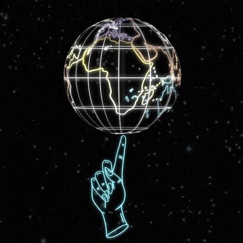

Visualisation des tremblements de terre dans le monde
Paramètres :
Période :
Début :
Fin :
Magnitude :
Minimum :
Maximum :
Couleur des marqueurs :
Mode nuit ?
Valider
Mode lecture :
<<
⏵
⏸
>>
Vitesse j/ms: 1000
Date: 2000-03-03
